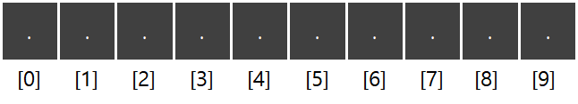
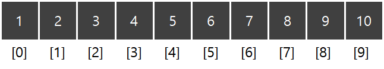
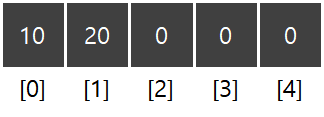
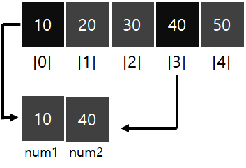

[목차]
#1 배열
1.1 배열 선언
1.2 ArrayOf()
1.3 string 배열
1.4 set()
1.5 get()
* 개인적인 Kotlin 언어의 공부 내용을 정리 하고자 하는 용도로 작성된 글 이기에, 잘못된 내용이 있을 수 있습니다.
#1 배열
코틀린은 다른 언어와 마찬가지로 여러 개의 값을 하나의 변수에 저장할 수 있는 다양한 자료구조를 제공하는데, 그 중 대표적인 것이 배열(Array)이다.
1.1 배열 선언
배열의 선언 방식은 다음과 같다.
var 변수 = (데이터타입)Array(개수)var ary1 = IntArray(10) // Int형 Array
var ary2 = LongArray(10) // Long형 Array
var ary3 = CharArray(10) // Char형 Array
var ary4 = FloatArray(10) // Float형 Array
var ary5 = DoubleArray(10) // Double형 Array
ary1 변수는 Int형 빈 메모리 공간 10개를 가진 배열이며, 인덱스(Index)는 [0] 부터 시작한다.
var ary1 = IntArray(10)
1.2 ArrayOf()
arrayOf() 함수를 이용하면, 값을 직접 할당할 수 있다. 사용 방법은 다음과 같다.
var ary1 = intArrayOf(1, 2, 3, 4, 5, 6, 7, 8, 9, 10)
1.3 string 배열
String 은 기본 타입이 아니기에, 다른 자료형들과 같이 StringArray는 존재하지 않는다. 따라서 String 배열의 선언 방식은 다른 배열들과 달리 약간 독특하다.
다음 코드는 빈 문자열 10개로 이루어진 배열 공간을 할당하는 코드이며, Array의 첫 번째 인자의 숫자를 조정해 데이터 공간의 수를 설정할 수 있다.
var stringArray = Array(10, {item->""})string 배열도 마찬가지로 arrayOf() 함수를 사용해 직접 할당할 수도 있다.
var stringArray = arrayOf("HELLO","WORLD","!!")
1.4 set()
배열에 값을 입력하는 방법은 대괄호([ ])를 사용하는 방식, set 함수를 사용하는 방식 2가지로 나뉜다. (기능 상 차이는 없다.)
배열명.set() 형식으로 사용하며, 첫 번째 인자에는 추가할 위치의 인덱스 번호를 두 번째 인자에는 값을 입력한다.
다음 코드는 int형 배열을 선언하고, 0번째, 1번째 인덱스에 각각 10, 20을 입력하는 예제이다.
var numberArray = IntArray(5)
numberArray[0] = 10
numbetArray.set(2, 20)
1.5 get()
배열에 값을 꺼내는 방법은 대괄호([ ])를 사용하는 방식, get 함수를 사용하는 방식 2가지로 나뉜다.
마찬가지로 배열이름.get() 과 같이 사용하며, 괄호 안에는 가져올 자료의 인덱스 번호를 넣는다.
다음 코드는 int형 배열 선언과 동시에 10, 20, 30, 40, 50을 초기화 하고, 0번째, 3번째 인덱스의 값을 변수에 초기화 하는 예제이다.
var numberArray = intArrayOf(10, 20, 30, 40, 50)
var num1 = numberArray[0]
var num2 = numberArray[3]